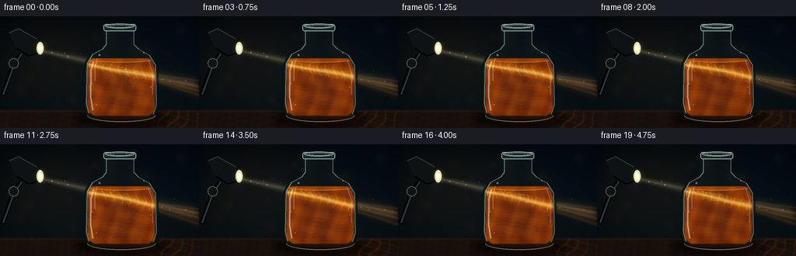
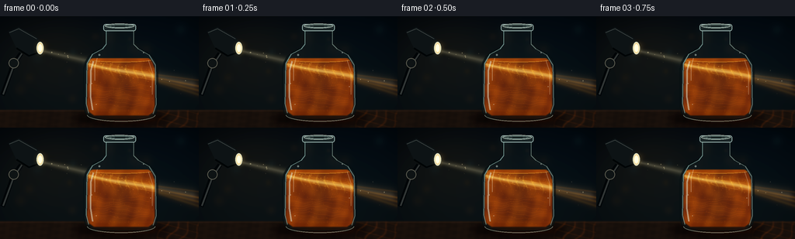

CODING AGENTS AS PIXEL WORLD MODELS
traex/GPT-5.6-Sol · phygen_050
点击播放 · 原生 RGB 像素
逐轮保存的候选
回放视频、检查图与代码变化。
每份候选均可单独播放。实际图片检查记录在下方工具轨迹中。
候选 01播放与检查图
点击播放 · 原生 RGB 像素


展开代码变化
--- 上一保存版本
+++ 本次保存版本
@@ -0,0 +1,284 @@
+from pathlib import Path
+import math
+import json
+import numpy as np
+from PIL import Image, ImageDraw, ImageFilter, ImageEnhance
+import artifact_io
+
+# Deterministic, supersampled procedural cinematography.
+ROOT = Path(__file__).resolve().parent
+spec = json.loads((ROOT / "task_spec.json").read_text())
+W, H, N = spec["width"], spec["height"], spec["frames"]
+S = 3
+w, h = W*S, H*S
+Y, X = np.mgrid[0:h, 0:w].astype(np.float32)
+x, y = X/S, Y/S
+rng = np.random.default_rng(5017)
+
+
+def smoothstep(a, b, z):
+ q = np.clip((z-a)/(b-a), 0, 1)
+ return q*q*(3-2*q)
+
+
+def composite_rgb(base, color, alpha):
+ a = np.clip(alpha, 0, 1)[..., None]
+ return base*(1-a) + np.asarray(color, np.float32)*a
+
+
+def P(points):
+ return [(int(round(a*S)), int(round(b*S))) for a,b in points]
+
+
+def mask_polygon(points, blur=0):
+ m = Image.new("L", (w,h), 0)
+ ImageDraw.Draw(m).polygon(P(points), fill=255)
+ if blur:
+ m = m.filter(ImageFilter.GaussianBlur(blur*S))
+ return np.asarray(m, np.float32)/255
+
+
+def rgba_layer():
+ return Image.new("RGBA", (w,h), (0,0,0,0))
+
+# Smooth bottle silhouette, interpolated from an anatomically bottle-like outline.
+outline_pts = [
+ (136,14),(136,36),(134,40),(128,43),(120,47),(114,52),(110,59),
+ (108,68),(108,117),(110,125),(115,130),(122,133),(190,133),(197,130),
+ (201,124),(203,117),(203,68),(201,59),(197,53),(191,48),(183,44),
+ (175,40),(172,36),(172,14)
+]
+bottle_mask_img = Image.new("L", (w,h), 0)
+bd = ImageDraw.Draw(bottle_mask_img)
+bd.polygon(P(outline_pts), fill=255)
+# Rounded bottom/shoulder smoothing without losing the silhouette.
+bottle_mask_img = bottle_mask_img.filter(ImageFilter.GaussianBlur(0.8*S))
+bottle_mask = np.asarray(bottle_mask_img, np.float32)/255
+inner_mask_img = Image.new("L", (w,h), 0)
+idraw = ImageDraw.Draw(inner_mask_img)
+inner_pts = [(113,62),(116,56),(123,51),(134,46),(141,42),(141,40),(167,40),
+ (168,42),(176,46),(188,51),(196,59),(199,68),(199,116),(197,124),
+ (191,128),(121,128),(114,123),(112,116)]
+idraw.polygon(P(inner_pts), fill=255)
+inner_mask_img = inner_mask_img.filter(ImageFilter.GaussianBlur(0.65*S))
+inner_mask = np.asarray(inner_mask_img, np.float32)/255
+# Juice starts below the visible meniscus.
+juice_mask = inner_mask * smoothstep(53.4, 55.2, y)
+
+# Background bokeh and dust positions remain stable, as in a locked-off macro shot.
+bokeh = [(float(rng.uniform(18,246)), float(rng.uniform(10,112)), float(rng.uniform(3,14)),
+ rng.choice([0,1,2])) for _ in range(22)]
+air_dust = [(float(rng.uniform(52,247)), float(rng.uniform(36,105)), float(rng.uniform(.22,.7)),
+ float(rng.uniform(0,6.3))) for _ in range(58)]
+pulp = []
+for i in range(230):
+ px = float(rng.uniform(114,198)); py = float(rng.uniform(57,126))
+ # retain points inside bottle-ish curved interior
+ if ((px-156)/46)**4 + ((py-92)/42)**4 < 1.16:
+ pulp.append((px,py,float(rng.uniform(.17,.72)),float(rng.uniform(0,6.283)),float(rng.uniform(.25,1))))
+
+frames=[]
+for fi in range(N):
+ t = fi / spec["fps"]
+ # Moody blue-black room: a warm reading nook with subtle lens falloff.
+ top = np.array([5.5,10.5,16.5], np.float32)
+ bot = np.array([14.0,20.0,23.0], np.float32)
+ bg = top[None,None,:] + (bot-top)[None,None,:]*(y[...,None]/H)
+ warm = np.exp(-(((x-64)/76)**2 + ((y-45)/57)**2))
+ teal = np.exp(-(((x-211)/84)**2 + ((y-48)/77)**2))
+ bg += warm[...,None]*np.array([12,8,2])[None,None,:]
+ bg += teal[...,None]*np.array([0,3,4])[None,None,:]
+ vign = np.clip(1 - .35*((x-W/2)/(W*.71))**2 - .32*((y-H/2)/(H*.72))**2, .58, 1)
+ bg *= vign[...,None]
+
+ # Defocused warm/cool pinlights in the room.
+ for bx,by,br,kind in bokeh:
+ rr=((x-bx)**2+(y-by)**2)/(br*br)
+ halo=np.exp(-rr*2.0)*(.11 if kind else .07)
+ col = ([105,68,31] if kind==0 else ([31,63,70] if kind==1 else [80,54,25]))
+ bg = composite_rgb(bg,col,halo)
+
+ # Desk plane and fine, restrained wood grain.
+ desk_edge = smoothstep(119.5,122.5,y)
+ grain = 2.0*np.sin(x*.17 + np.sin(y*.73)) + 1.2*np.sin(x*.63+y*.11)
+ deskcol = np.stack([25+grain,18+grain*.55,14+grain*.3],axis=-1)
+ bg = bg*(1-desk_edge[...,None])+deskcol*desk_edge[...,None]
+ edgeglow=np.exp(-((y-122)/1.1)**2)*.18
+ bg=composite_rgb(bg,[91,58,31],edgeglow)
+
+ # The lamp's narrow volumetric shaft, before interacting with the bottle.
+ center = 43.4 + .224*(x-49)
+ width = 3.4 + .042*np.clip(x-49,0,None)
+ shaft = np.exp(-((y-center)/width)**2*1.55)
+ xgate = smoothstep(47,53,x)*(1-smoothstep(246,259,x))
+ pulse = .98 + .018*math.sin(t*2.1)
+ shaft_a = shaft*xgate*(.09 + .07*np.exp(-((x-90)/95)**2))*pulse
+ # Blocked/recolored behind the dense bottle, while preserving edge bloom.
+ shaft_a *= (1 - bottle_mask*.78)
+ bg=composite_rgb(bg,[255,236,169],shaft_a)
+ core=np.exp(-((y-center)/(1.35+.018*np.clip(x-50,0,None)))**2*1.7)*xgate
+ bg=composite_rgb(bg,[255,249,214],core*.065*(1-bottle_mask*.86))
+
+ # Orange fan and shifting caustic rays emerging from the far bottle wall.
+ exit_gate=smoothstep(197,204,x)
+ for ri,(offs,slope,amp) in enumerate([(-4,.135,.095),(-1,.20,.16),(2,.255,.12),(5,.32,.08)]):
+ cy=79+offs+slope*(x-199)+1.0*math.sin(t*.9+ri*1.4)
+ ray=np.exp(-((y-cy)/(1.1+ri*.25))**2)*exit_gate
+ bg=composite_rgb(bg,[255,151+ri*9,36],ray*amp)
+ fan_center=81+.23*(x-200)
+ fan=np.exp(-((y-fan_center)/(6+.08*np.clip(x-200,0,None)))**2)*exit_gate*.09
+ bg=composite_rgb(bg,[226,91,14],fan)
+
+ # Projected moving light lace across the tabletop to the right.
+ proj_gate=smoothstep(199,207,x)*smoothstep(119,125,y)
+ lace=(.5+.5*np.sin(x*.41+y*.22+t*1.3+1.4*np.sin(x*.09-y*.17)))**9
+ lace2=(.5+.5*np.sin(x*.17-y*.63-t*.8))**12
+ projection=proj_gate*(lace*.15+lace2*.08)*np.exp(-(x-205)/80)
+ bg=composite_rgb(bg,[222,91,17],projection)
+
+ im=Image.fromarray(np.uint8(np.clip(bg,0,255)),"RGB").convert("RGBA")
+
+ # Soft bottle/contact shadows.
+ shadow=rgba_layer(); sd=ImageDraw.Draw(shadow)
+ sd.ellipse((94*S,124*S,216*S,141*S),fill=(0,0,0,175))
+ shadow=shadow.filter(ImageFilter.GaussianBlur(5*S)); im=Image.alpha_composite(im,shadow)
+ amber=rgba_layer(); ad=ImageDraw.Draw(amber)
+ ad.ellipse((117*S,127*S,207*S,137*S),fill=(197,63,5,55))
+ amber=amber.filter(ImageFilter.GaussianBlur(4*S)); im=Image.alpha_composite(im,amber)
+
+ # Glass volume: cool smoky refraction under the juice.
+ arr=np.asarray(im.convert("RGB"),np.float32)
+ side_shade = .11 + .12*np.abs((x-155.5)/48)
+ arr=composite_rgb(arr,[38,55,57],bottle_mask*side_shade)
+ # Amber juice body with believable density and side absorption.
+ turbulent=(np.sin(x*.22 + 1.25*np.sin(y*.105+t*.55)) +
+ .58*np.sin(y*.31-x*.073-t*.85) + .32*np.sin(x*.48+y*.16+t*.7))
+ density=np.clip(.52 + turbulent*.045 + .16*np.abs((x-156)/46),.45,.76)
+ juice_col=np.zeros_like(arr)
+ juice_col[...,0]=184 + turbulent*5
+ juice_col[...,1]=66 + turbulent*7
+ juice_col[...,2]=7 + turbulent*2
+ a=juice_mask*density
+ arr=arr*(1-a[...,None])+juice_col*a[...,None]
+
+ # Bright beam glows gold inside the particulate liquid and bends slightly.
+ bend_center=59.8 + .205*(x-109) + 1.05*np.sin((x-109)*.055+t*.75)
+ ibroad=np.exp(-((y-bend_center)/(5.5+0.018*(x-110)))**2)*juice_mask
+ arr=composite_rgb(arr,[255,132,15],ibroad*.36*pulse)
+ icore=np.exp(-((y-bend_center-0.5)/(1.55+.014*(x-110)))**2)*juice_mask
+ arr=composite_rgb(arr,[255,238,132],icore*.49*pulse)
+ # Fine refractive interference and pulp-density patterns, limited to the beam.
+ caust=(.5+.5*np.sin(x*.62 + 1.8*np.sin(y*.21+t*.7)))**10
+ caust+=.55*(.5+.5*np.sin(y*.83-x*.18-t*1.15))**13
+ caust*=ibroad*juice_mask
+ arr=composite_rgb(arr,[255,205,62],np.clip(caust*.26,0,.42))
+ im=Image.fromarray(np.uint8(np.clip(arr,0,255)),"RGB").convert("RGBA")
+
+ # Liquid meniscus, internal refracted filaments and eddies.
+ inside=rgba_layer(); di=ImageDraw.Draw(inside)
+ di.ellipse((113*S,51.5*S,199*S,59.5*S),fill=(225,101,13,75),outline=(255,175,55,120),width=max(1,S))
+ for k in range(9):
+ pts=[]
+ for q in range(43):
+ xx=111+q*2.12
+ yy=60.0+.205*(xx-109)+(k-4)*1.08 + 1.25*math.sin(xx*.085+t*.8+k*.72)
+ yy+=.35*math.sin(xx*.29-t*1.1+k)
+ pts.append((xx*S,yy*S))
+ col=(255,220-7*k,102-5*k,36+7*(k%3))
+ di.line(pts,fill=col,width=max(1,int((.45+(k%3)*.16)*S)))
+ # Vortex-like curved highlights show the juice is mixed and suspended.
+ for k in range(7):
+ pts=[]
+ for q in range(48):
+ xx=118+q*1.58
+ yy=91+k*4.1+2.1*math.sin(xx*.095+t*.6+k*.8)+.7*math.sin(xx*.34-t)
+ pts.append((xx*S,yy*S))
+ di.line(pts,fill=(234,109,18,16+4*(k%2)),width=S)
+ # Clip all interior line art to juice.
+ ainside=np.asarray(inside.getchannel("A"),np.uint8)
+ ainside=np.minimum(ainside,np.uint8(np.clip(juice_mask*255,0,255)))
+ inside.putalpha(Image.fromarray(ainside,"L"))
+ im=Image.alpha_composite(im,inside)
+
+ # Animated pulp: tiny, numerous particles brighten sharply in the beam.
+ part=rgba_layer(); pd=ImageDraw.Draw(part)
+ for j,(px0,py0,rad,phase,depth) in enumerate(pulp):
+ # slow circulation in mixed juice, loop-free but temporally coherent
+ px=px0 + (1.05+.55*depth)*math.sin(t*.55+phase+py0*.035)
+ py=py0 + (.55+.35*depth)*math.cos(t*.47+phase+px0*.028)
+ if not (112<px<200 and 55<py<129):
+ continue
+ beam_y=59.8+.205*(px-109)+1.05*math.sin((px-109)*.055+t*.75)
+ illum=math.exp(-((py-beam_y)/7.2)**2)
+ alpha=int(18+105*illum*depth)
+ rr=rad*S*(.75+illum*.65)
+ color=(255,int(127+95*illum),int(20+75*illum),alpha)
+ pd.ellipse((px*S-rr,py*S-rr,px*S+rr,py*S+rr),fill=color)
+ im=Image.alpha_composite(im,part)
+
+ # Glass edges, rim, distorted glints and condensation points.
+ glass=rgba_layer(); gd=ImageDraw.Draw(glass)
+ # dark contour followed by selective bright contour
+ gd.line(P(outline_pts+[outline_pts[0]]),fill=(4,11,13,125),width=2*S,joint="curve")
+ gd.line(P([(136.5,17),(136.5,36),(132,42),(119,49),(112,61),(111,113),(114,125)]),
+ fill=(170,216,205,145),width=max(2,S),joint="curve")
+ gd.line(P([(172,18),(172,36),(178,42),(192,50),(200,63),(201,114),(197,126)]),
+ fill=(200,229,211,108),width=max(2,S),joint="curve")
+ # neck lip and bottle mouth
+ gd.rounded_rectangle((133*S,10*S,175*S,19*S),radius=3*S,fill=(31,42,42,170),outline=(194,224,216,190),width=S)
+ gd.ellipse((135*S,9.5*S,173*S,15.5*S),fill=(67,83,79,190),outline=(222,240,227,175),width=S)
+ gd.ellipse((141*S,11*S,168*S,14.5*S),fill=(12,18,18,205),outline=(126,157,149,140),width=S)
+ # Long, curved photographic specular strips.
+ gd.line(P([(120,58),(116.5,70),(116.2,104),(119,121)]),fill=(229,249,233,112),width=2*S)
+ gd.line(P([(125,54),(122,66),(122,83)]),fill=(255,255,238,72),width=S)
+ gd.line(P([(191,57),(196,72),(196,101)]),fill=(255,235,195,65),width=S)
+ gd.arc((112*S,119*S,200*S,136*S),0,180,fill=(234,244,218,108),width=S)
+ # small glass catches
+ for cx,cy,rr in [(128,50,1.2),(118,87,.7),(194,91,.6),(185,47,.8),(124,114,.45)]:
+ gd.ellipse(((cx-rr)*S,(cy-rr)*S,(cx+rr)*S,(cy+rr)*S),fill=(241,255,239,100))
+ # gentle bloom on highlights
+ bloom=glass.copy().filter(ImageFilter.GaussianBlur(2.2*S))
+ bloom.putalpha(bloom.getchannel('A').point(lambda v: int(v*.26)))
+ im=Image.alpha_composite(im,bloom); im=Image.alpha_composite(im,glass)
+
+ # Airborne dust motes visibly crossing the lamp beam, in front of the scene.
+ dust=rgba_layer(); dd=ImageDraw.Draw(dust)
+ for dx,dy,dr,ph in air_dust:
+ ddy=dy+.8*math.sin(t*.45+ph)
+ cc=43.4+.224*(dx-49)
+ light=math.exp(-((ddy-cc)/(6+.03*(dx-49)))**2)
+ if light>.12 and not (106<dx<205 and 42<ddy<134):
+ aa=int(95*light)
+ rr=dr*S
+ dd.ellipse((dx*S-rr,ddy*S-rr,dx*S+rr,ddy*S+rr),fill=(255,238,185,aa))
+ im=Image.alpha_composite(im,dust)
+
+ # Industrial reading lamp in the foreground, with the bulb at the shaft origin.
+ lamp=rgba_layer(); ld=ImageDraw.Draw(lamp)
+ # articulated arm and joint
+ ld.line(P([(3,102),(17,62),(27,48)]),fill=(4,7,9,255),width=6*S)
+ ld.line(P([(4,101),(18,63),(28,48)]),fill=(49,53,52,255),width=2*S)
+ ld.ellipse((11*S,54*S,24*S,67*S),fill=(16,20,21,255),outline=(91,91,81,255),width=S)
+ # shade body aimed down-right
+ shade=P([(11,20),(24,14),(47,27),(55,36),(52,48),(37,53),(21,41)])
+ ld.polygon(shade,fill=(15,20,22,255))
+ ld.line(P([(12,21),(24,16),(47,29)]),fill=(70,76,74,230),width=S)
+ ld.line(P([(21,41),(37,51),(51,46)]),fill=(3,6,7,255),width=2*S)
+ # luminous opening and bulb, with halo
+ halo=rgba_layer(); hd=ImageDraw.Draw(halo)
+ hd.ellipse((46*S,32*S,58*S,51*S),fill=(255,219,132,100))
+ halo=halo.filter(ImageFilter.GaussianBlur(4*S)); lamp=Image.alpha_composite(lamp,halo)
+ ld=ImageDraw.Draw(lamp)
+ ld.ellipse((47*S,33*S,56*S,49*S),fill=(255,230,169,230),outline=(208,213,190,255),width=S)
+ ld.ellipse((49*S,36*S,54*S,46*S),fill=(255,252,220,255))
+ im=Image.alpha_composite(im,lamp)
+
+ # Downsample to the required RGB frame with subtle contrast shaping.
+ im=im.convert("RGB").resize((W,H),Image.Resampling.LANCZOS)
+ im=ImageEnhance.Contrast(im).enhance(1.06)
+ im=ImageEnhance.Color(im).enhance(1.05)
+ frames.append(np.asarray(im,dtype=np.uint8))
+
+frames=np.stack(frames,axis=0)
+artifact_io.save(frames, ROOT)
+print(f"saved {frames.shape} {frames.dtype}; range={frames.min()}..{frames.max()}")
可观测工具轨迹
实际执行的命令与返回图片。
命令 1exit 0
/bin/bash -lc "ls -la && printf '\\n--- prompt.txt ---\\n' && cat prompt.txt && printf '\\n--- GENERATION_RULES.md ---\\n' && cat GENERATION_RULES.md && printf '\\n--- task_spec.json ---\\n' && cat task_spec.json"
命令 2exit 0
/bin/bash -lc "find . -maxdepth 2 -type f -printf '%p\\n' | sort"
命令 3exit 0
/bin/bash -lc "python - <<'PY' import importlib.util for m in ['numpy','PIL','imageio','cv2','scipy']: print(m, bool(importlib.util.find_spec(m))) PY ffmpeg -version | head -2 || true"
命令 4exit 0
/bin/bash -lc 'cat artifact_io.py'
命令 5exit 0
/bin/bash -lc "cat > generate.py <<'PY'
from pathlib import Path
import math
import json
import numpy as np
from PIL import Image, ImageDraw, ImageFilter, ImageEnhance
import artifact_io
# Deterministic, supersampled procedural cinematography.
ROOT = Path(__file__).resolve().parent
spec = json.loads((ROOT / \"task_spec.json\").read_text())
W, H, N = spec[\"width\"], spec[\"height\"], spec[\"frames\"]
S = 3
w, h = W*S, H*S
Y, X = np.mgrid[0:h, 0:w].astype(np.float32)
x, y = X/S, Y/S
rng = np.random.default_rng(5017)
def smoothstep(a, b, z):
q = np.clip((z-a)/(b-a), 0, 1)
return q*q*(3-2*q)
def composite_rgb(base, color, alpha):
a = np.clip(alpha, 0, 1)[..., None]
return base*(1-a) + np.asarray(color, np.float32)*a
def P(points):
return [(int(round(a*S)), int(round(b*S))) for a,b in points]
def mask_polygon(points, blur=0):
m = Image.new(\"L\", (w,h), 0)
ImageDraw.Draw(m).polygon(P(points), fill=255)
if blur:
m = m.filter(ImageFilter.GaussianBlur(blur*S))
return np.asarray(m, np.float32)/255
def rgba_layer():
return Image.new(\"RGBA\", (w,h), (0,0,0,0))
# Smooth bottle silhouette, interpolated from an anatomically bottle-like outline.
outline_pts = [
(136,14),(136,36),(134,40),(128,43),(120,47),(114,52),(110,59),
(108,68),(108,117),(110,125),(115,130),(122,133),(190,133),(197,130),
(201,124),(203,117),(203,68),(201,59),(197,53),(191,48),(183,44),
(175,40),(172,36),(172,14)
]
bottle_mask_img = Image.new(\"L\", (w,h), 0)
bd = ImageDraw.Draw(bottle_mask_img)
bd.polygon(P(outline_pts), fill=255)
# Rounded bottom/shoulder smoothing without losing the silhouette.
bottle_mask_img = bottle_mask_img.filter(ImageFilter.GaussianBlur(0.8*S))
bottle_mask = np.asarray(bottle_mask_img, np.float32)/255
inner_mask_img = Image.new(\"L\", (w,h), 0)
idraw = ImageDraw.Draw(inner_mask_img)
inner_pts = [(113,62),(116,56),(123,51),(134,46),(141,42),(141,40),(167,40),
(168,42),(176,46),(188,51),(196,59),(199,68),(199,116),(197,124),
(191,128),(121,128),(114,123),(112,116)]
idraw.polygon(P(inner_pts), fill=255)
inner_mask_img = inner_mask_img.filter(ImageFilter.GaussianBlur(0.65*S))
inner_mask = np.asarray(inner_mask_img, np.float32)/255
# Juice starts below the visible meniscus.
juice_mask = inner_mask * smoothstep(53.4, 55.2, y)
# Background bokeh and dust positions remain stable, as in a locked-off macro shot.
bokeh = [(float(rng.uniform(18,246)), float(rng.uniform(10,112)), float(rng.uniform(3,14)),
rng.choice([0,1,2])) for _ in range(22)]
air_dust = [(float(rng.uniform(52,247)), float(rng.uniform(36,105)), float(rng.uniform(.22,.7)),
float(rng.uniform(0,6.3))) for _ in range(58)]
pulp = []
for i in range(230):
px = float(rng.uniform(114,198)); py = float(rng.uniform(57,126))
# retain points inside bottle-ish curved interior
if ((px-156)/46)**4 + ((py-92)/42)**4 < 1.16:
pulp.append((px,py,float(rng.uniform(.17,.72)),float(rng.uniform(0,6.283)),float(rng.uniform(.25,1))))
frames=[]
for fi in range(N):
t = fi / spec[\"fps\"]
# Moody blue-black room: a warm reading nook with subtle lens falloff.
top = np.array([5.5,10.5,16.5], np.float32)
bot = np.array([14.0,20.0,23.0], np.float32)
bg = top[None,None,:] + (bot-top)[None,None,:]*(y[...,None]/H)
warm = np.exp(-(((x-64)/76)**2 + ((y-45)/57)**2))
teal = np.exp(-(((x-211)/84)**2 + ((y-48)/77)**2))
bg += warm[...,None]*np.array([12,8,2])[None,None,:]
bg += teal[...,None]*np.array([0,3,4])[None,None,:]
vign = np.clip(1 - .35*((x-W/2)/(W*.71))**2 - .32*((y-H/2)/(H*.72))**2, .58, 1)
bg *= vign[...,None]
# Defocused warm/cool pinlights in the room.
for bx,by,br,kind in bokeh:
rr=((x-bx)**2+(y-by)**2)/(br*br)
halo=np.exp(-rr*2.0)*(.11 if kind else .07)
col = ([105,68,31] if kind==0 else ([31,63,70] if kind==1 else [80,54,25]))
bg = composite_rgb(bg,col,halo)
# Desk plane and fine, restrained wood grain.
desk_edge = smoothstep(119.5,122.5,y)
grain = 2.0*np.sin(x*.17 + np.sin(y*.73)) + 1.2*np.sin(x*.63+y*.11)
deskcol = np.stack([25+grain,18+grain*.55,14+grain*.3],axis=-1)
bg = bg*(1-desk_edge[...,None])+deskcol*desk_edge[...,None]
edgeglow=np.exp(-((y-122)/1.1)**2)*.18
bg=composite_rgb(bg,[91,58,31],edgeglow)
# The lamp's narrow volumetric shaft, before interacting with the bottle.
center = 43.4 + .224*(x-49)
width = 3.4 + .042*np.clip(x-49,0,None)
shaft = np.exp(-((y-center)/width)**2*1.55)
xgate = smoothstep(47,53,x)*(1-smoothstep(246,259,x))
pulse = .98 + .018*math.sin(t*2.1)
shaft_a = shaft*xgate*(.09 + .07*np.exp(-((x-90)/95)**2))*pulse
# Blocked/recolored behind the dense bottle, while preserving edge bloom.
shaft_a *= (1 - bottle_mask*.78)
bg=composite_rgb(bg,[255,236,169],shaft_a)
core=np.exp(-((y-center)/(1.35+.018*np.clip(x-50,0,None)))**2*1.7)*xgate
bg=composite_rgb(bg,[255,249,214],core*.065*(1-bottle_mask*.86))
# Orange fan and shifting caustic rays emerging from the far bottle wall.
exit_gate=smoothstep(197,204,x)
for ri,(offs,slope,amp) in enumerate([(-4,.135,.095),(-1,.20,.16),(2,.255,.12),(5,.32,.08)]):
cy=79+offs+slope*(x-199)+1.0*math.sin(t*.9+ri*1.4)
ray=np.exp(-((y-cy)/(1.1+ri*.25))**2)*exit_gate
bg=composite_rgb(bg,[255,151+ri*9,36],ray*amp)
fan_center=81+.23*(x-200)
fan=np.exp(-((y-fan_center)/(6+.08*np.clip(x-200,0,None)))**2)*exit_gate*.09
bg=composite_rgb(bg,[226,91,14],fan)
# Projected moving light lace across the tabletop to the right.
proj_gate=smoothstep(199,207,x)*smoothstep(119,125,y)
lace=(.5+.5*np.sin(x*.41+y*.22+t*1.3+1.4*np.sin(x*.09-y*.17)))**9
lace2=(.5+.5*np.sin(x*.17-y*.63-t*.8))**12
projection=proj_gate*(lace*.15+lace2*.08)*np.exp(-(x-205)/80)
bg=composite_rgb(bg,[222,91,17],projection)
im=Image.fromarray(np.uint8(np.clip(bg,0,255)),\"RGB\").convert(\"RGBA\")
# Soft bottle/contact shadows.
shadow=rgba_layer(); sd=ImageDraw.Draw(shadow)
sd.ellipse((94*S,124*S,216*S,141*S),fill=(0,0,0,175))
shadow=shadow.filter(ImageFilter.GaussianBlur(5*S)); im=Image.alpha_composite(im,shadow)
amber=rgba_layer(); ad=ImageDraw.Draw(amber)
ad.ellipse((117*S,127*S,207*S,137*S),fill=(197,63,5,55))
amber=amber.filter(ImageFilter.GaussianBlur(4*S)); im=Image.alpha_composite(im,amber)
# Glass volume: cool smoky refraction under the juice.
arr=np.asarray(im.convert(\"RGB\"),np.float32)
side_shade = .11 + .12*np.abs((x-155.5)/48)
arr=composite_rgb(arr,[38,55,57],bottle_mask*side_shade)
# Amber juice body with believable density and side absorption.
turbulent=(np.sin(x*.22 + 1.25*np.sin(y*.105+t*.55)) +
.58*np.sin(y*.31-x*.073-t*.85) + .32*np.sin(x*.48+y*.16+t*.7))
density=np.clip(.52 + turbulent*.045 + .16*np.abs((x-156)/46),.45,.76)
juice_col=np.zeros_like(arr)
juice_col[...,0]=184 + turbulent*5
juice_col[...,1]=66 + turbulent*7
juice_col[...,2]=7 + turbulent*2
a=juice_mask*density
arr=arr*(1-a[...,None])+juice_col*a[...,None]
# Bright beam glows gold inside the particulate liquid and bends slightly.
bend_center=59.8 + .205*(x-109) + 1.05*np.sin((x-109)*.055+t*.75)
ibroad=np.exp(-((y-bend_center)/(5.5+0.018*(x-110)))**2)*juice_mask
arr=composite_rgb(arr,[255,132,15],ibroad*.36*pulse)
icore=np.exp(-((y-bend_center-0.5)/(1.55+.014*(x-110)))**2)*juice_mask
arr=composite_rgb(arr,[255,238,132],icore*.49*pulse)
# Fine refractive interference and pulp-density patterns, limited to the beam.
caust=(.5+.5*np.sin(x*.62 + 1.8*np.sin(y*.21+t*.7)))**10
caust+=.55*(.5+.5*np.sin(y*.83-x*.18-t*1.15))**13
caust*=ibroad*juice_mask
arr=composite_rgb(arr,[255,205,62],np.clip(caust*.26,0,.42))
im=Image.fromarray(np.uint8(np.clip(arr,0,255)),\"RGB\").convert(\"RGBA\")
# Liquid meniscus, internal refracted filaments and eddies.
inside=rgba_layer(); di=ImageDraw.Draw(inside)
di.ellipse((113*S,51.5*S,199*S,59.5*S),fill=(225,101,13,75),outline=(255,175,55,120),width=max(1,S))
for k in range(9):
pts=[]
for q in range(43):
xx=111+q*2.12
yy=60.0+.205*(xx-109)+(k-4)*1.08 + 1.25*math.sin(xx*.085+t*.8+k*.72)
yy+=.35*math.sin(xx*.29-t*1.1+k)
pts.append((xx*S,yy*S))
col=(255,220-7*k,102-5*k,36+7*(k%3))
di.line(pts,fill=col,width=max(1,int((.45+(k%3)*.16)*S)))
# Vortex-like curved highlights show the juice is mixed and suspended.
for k in range(7):
pts=[]
for q in range(48):
xx=118+q*1.58
yy=91+k*4.1+2.1*math.sin(xx*.095+t*.6+k*.8)+.7*math.sin(xx*.34-t)
pts.append((xx*S,yy*S))
di.line(pts,fill=(234,109,18,16+4*(k%2)),width=S)
# Clip all interior line art to juice.
ainside=np.asarray(inside.getchannel(\"A\"),np.uint8)
ainside=np.minimum(ainside,np.uint8(np.clip(juice_mask*255,0,255)))
inside.putalpha(Image.fromarray(ainside,\"L\"))
im=Image.alpha_composite(im,inside)
# Animated pulp: tiny, numerous particles brighten sharply in the beam.
part=rgba_layer(); pd=ImageDraw.Draw(part)
for j,(px0,py0,rad,phase,depth) in enumerate(pulp):
# slow circulation in mixed juice, loop-free but temporally coherent
px=px0 + (1.05+.55*depth)*math.sin(t*.55+phase+py0*.035)
py=py0 + (.55+.35*depth)*math.cos(t*.47+phase+px0*.028)
if not (112<px<200 and 55<py<129):
continue
beam_y=59.8+.205*(px-109)+1.05*math.sin((px-109)*.055+t*.75)
illum=math.exp(-((py-beam_y)/7.2)**2)
alpha=int(18+105*illum*depth)
rr=rad*S*(.75+illum*.65)
color=(255,int(127+95*illum),int(20+75*illum),alpha)
pd.ellipse((px*S-rr,py*S-rr,px*S+rr,py*S+rr),fill=color)
im=Image.alpha_composite(im,part)
# Glass edges, rim, distorted glints and condensation points.
glass=rgba_layer(); gd=ImageDraw.Draw(glass)
# dark contour followed by selective bright contour
gd.line(P(outline_pts+[outline_pts[0]]),fill=(4,11,13,125),width=2*S,joint=\"curve\")
gd.line(P([(136.5,17),(136.5,36),(132,42),(119,49),(112,61),(111,113),(114,125)]),
fill=(170,216,205,145),width=max(2,S),joint=\"curve\")
gd.line(P([(172,18),(172,36),(178,42),(192,50),(200,63),(201,114),(197,126)]),
fill=(200,229,211,108),width=max(2,S),joint=\"curve\")
# neck lip and bottle mouth
gd.rounded_rectangle((133*S,10*S,175*S,19*S),radius=3*S,fill=(31,42,42,170),outline=(194,224,216,190),width=S)
gd.ellipse((135*S,9.5*S,173*S,15.5*S),fill=(67,83,79,190),outline=(222,240,227,175),width=S)
gd.ellipse((141*S,11*S,168*S,14.5*S),fill=(12,18,18,205),outline=(126,157,149,140),width=S)
# Long, curved photographic specular strips.
gd.line(P([(120,58),(116.5,70),(116.2,104),(119,121)]),fill=(229,249,233,112),width=2*S)
gd.line(P([(125,54),(122,66),(122,83)]),fill=(255,255,238,72),width=S)
gd.line(P([(191,57),(196,72),(196,101)]),fill=(255,235,195,65),width=S)
gd.arc((112*S,119*S,200*S,136*S),0,180,fill=(234,244,218,108),width=S)
# small glass catches
for cx,cy,rr in [(128,50,1.2),(118,87,.7),(194,91,.6),(185,47,.8),(124,114,.45)]:
gd.ellipse(((cx-rr)*S,(cy-rr)*S,(cx+rr)*S,(cy+rr)*S),fill=(241,255,239,100))
# gentle bloom on highlights
bloom=glass.copy().filter(ImageFilter.GaussianBlur(2.2*S))
bloom.putalpha(bloom.getchannel('A').point(lambda v: int(v*.26)))
im=Image.alpha_composite(im,bloom); im=Image.alpha_composite(im,glass)
# Airborne dust motes visibly crossing the lamp beam, in front of the scene.
dust=rgba_layer(); dd=ImageDraw.Draw(dust)
for dx,dy,dr,ph in air_dust:
ddy=dy+.8*math.sin(t*.45+ph)
cc=43.4+.224*(dx-49)
light=math.exp(-((ddy-cc)/(6+.03*(dx-49)))**2)
if light>.12 and not (106<dx<205 and 42<ddy<134):
aa=int(95*light)
rr=dr*S
dd.ellipse((dx*S-rr,ddy*S-rr,dx*S+rr,ddy*S+rr),fill=(255,238,185,aa))
im=Image.alpha_composite(im,dust)
# Industrial reading lamp in the foreground, with the bulb at the shaft origin.
lamp=rgba_layer(); ld=ImageDraw.Draw(lamp)
# articulated arm and joint
ld.line(P([(3,102),(17,62),(27,48)]),fill=(4,7,9,255),width=6*S)
ld.line(P([(4,101),(18,63),(28,48)]),fill=(49,53,52,255),width=2*S)
ld.ellipse((11*S,54*S,24*S,67*S),fill=(16,20,21,255),outline=(91,91,81,255),width=S)
# shade body aimed down-right
shade=P([(11,20),(24,14),(47,27),(55,36),(52,48),(37,53),(21,41)])
ld.polygon(shade,fill=(15,20,22,255))
ld.line(P([(12,21),(24,16),(47,29)]),fill=(70,76,74,230),width=S)
ld.line(P([(21,41),(37,51),(51,46)]),fill=(3,6,7,255),width=2*S)
# luminous opening and bulb, with halo
halo=rgba_layer(); hd=ImageDraw.Draw(halo)
hd.ellipse((46*S,32*S,58*S,51*S),fill=(255,219,132,100))
halo=halo.filter(ImageFilter.GaussianBlur(4*S)); lamp=Image.alpha_composite(lamp,halo)
ld=ImageDraw.Draw(lamp)
ld.ellipse((47*S,33*S,56*S,49*S),fill=(255,230,169,230),outline=(208,213,190,255),width=S)
ld.ellipse((49*S,36*S,54*S,46*S),fill=(255,252,220,255))
im=Image.alpha_composite(im,lamp)
# Downsample to the required RGB frame with subtle contrast shaping.
im=im.convert(\"RGB\").resize((W,H),Image.Resampling.LANCZOS)
im=ImageEnhance.Contrast(im).enhance(1.06)
im=ImageEnhance.Color(im).enhance(1.05)
frames.append(np.asarray(im,dtype=np.uint8))
frames=np.stack(frames,axis=0)
artifact_io.save(frames, ROOT)
print(f\"saved {frames.shape} {frames.dtype}; range={frames.min()}..{frames.max()}\")
PY
python generate.py"命令 6exit 0
/bin/bash -lc "python - <<'PY'
from pathlib import Path
import numpy as np
from PIL import Image
z=np.load('pixels.npz')['pixels']
print('pixels tensor:',z.shape,z.dtype)
f=np.stack([np.asarray(Image.open(f'frames/{i:02}.png')) for i in range(20)])
print('frames:',f.shape,f.dtype)
print('means RGB:',np.round(f.mean((0,1,2)),2))
print('temporal MAD:',np.round(np.abs(np.diff(f.astype(float),axis=0)).mean((1,2,3)),3))
print('bright pixels/frame:',(f.max(3)>220).sum((1,2)).tolist())
print('outputs:')
for p in ['generate.py','pixels.npz','inspection.png','transition_check.png','index.html']:
q=Path(p); print(p,q.stat().st_size)
PY"保存候选 1 份；完成命令 6 次；可验证图片返回 0 张。原始 API 响应与完整日志保留在本地。